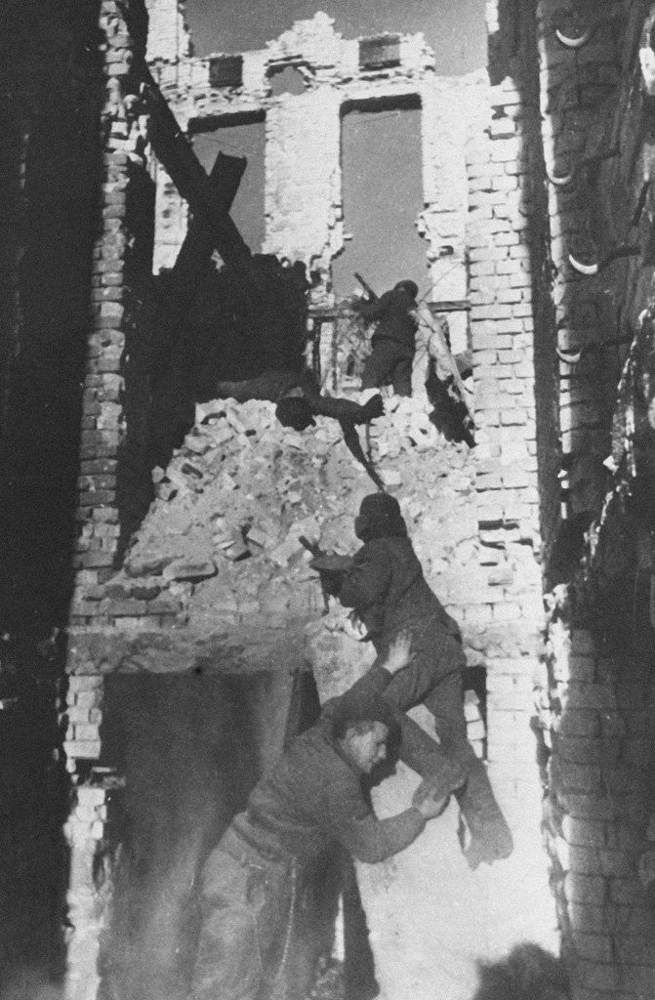
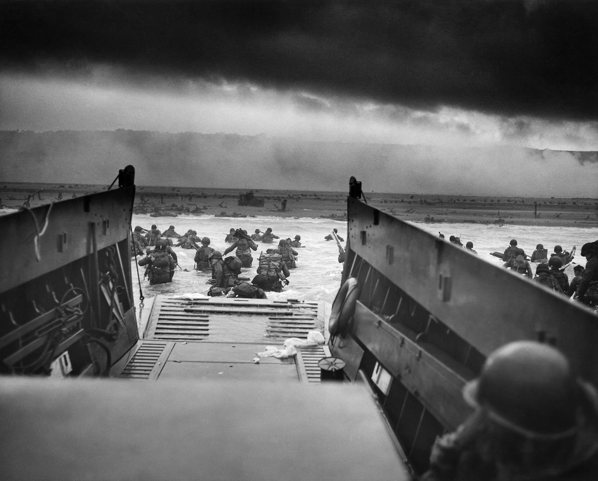
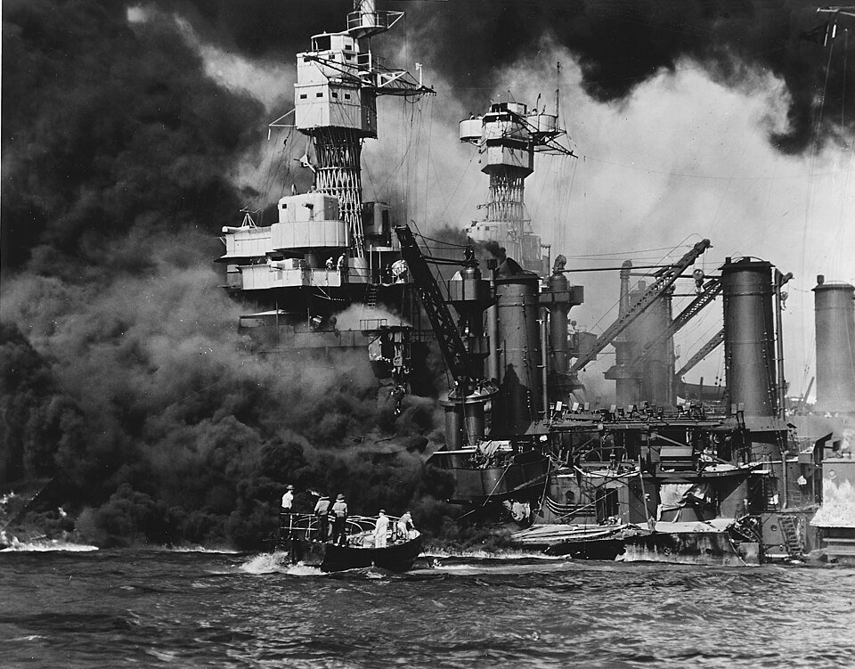
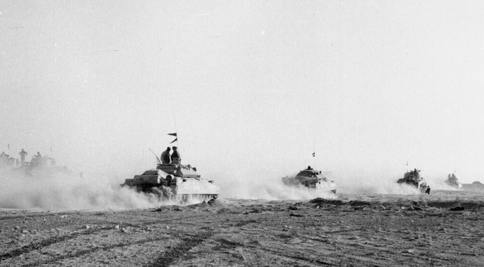
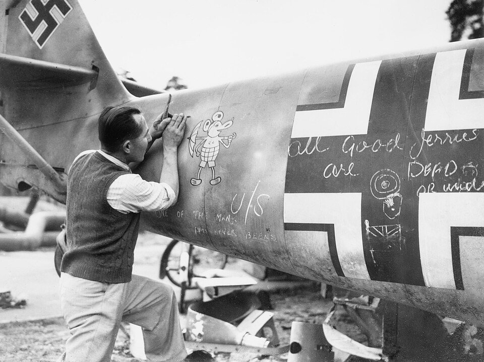
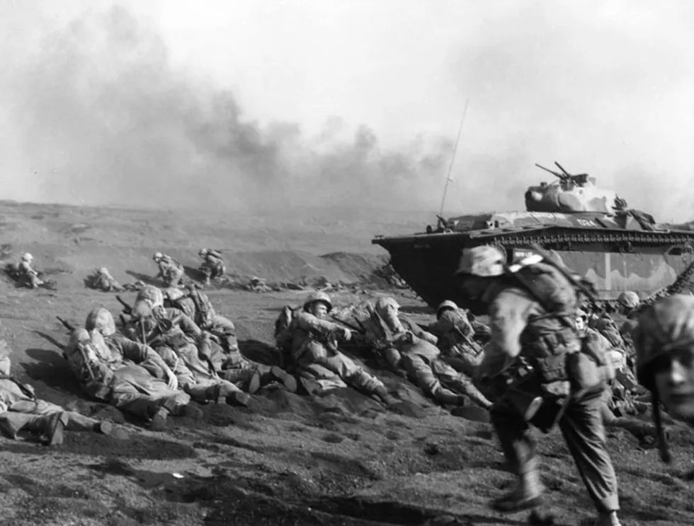
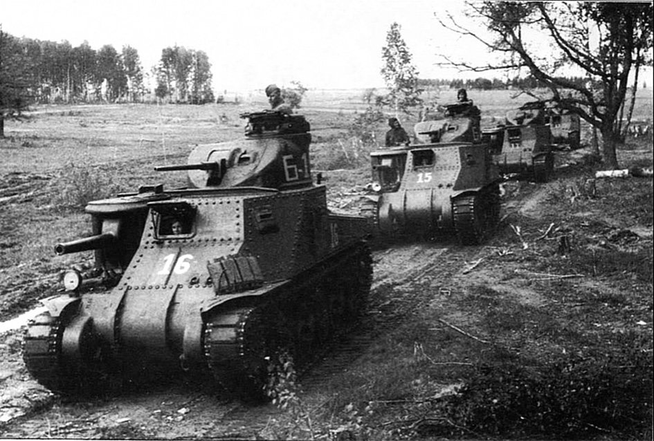

纽伦堡与东京审判
首次以国际法庭追究发动侵略战争与反人类罪的个人责任。“服从命令”不再是免责理由，但胜利者正义、战犯豁免与冷战政治也留下争议。
3D 地球需要 WebGL。你仍可浏览全部档案内容。
从九一八的枪声到密苏里号的签字。14 年，70 多个国家，约 1 亿军人，数千万条生命。这里不是胜利者的纪念碑，而是一份可以旋转、放大、追问的全球战争档案。
二次大战是一场总体战：前线与后方、工厂与农田、实验室与广播电台、士兵与平民，都被卷入同一台机器。理解它，必须同时看到宏大的战略与具体的人的命运。
这一年，日本关东军在中国东北发动九一八事变。六年后的卢沟桥，战争扩大为全民族抗战；1939年，德国入侵波兰，欧洲战争爆发；1941年，德国进攻苏联、日本偷袭珍珠港，战争真正覆盖全球。
到1945年，超过7000万人死亡，其中约三分之二是平民。南京、斯大林格勒、奥斯维辛、广岛、柏林——这些地名既属于战场，也属于人类暴行的坐标。二战的结局不是简单的“正义战胜邪恶”，而是反法西斯同盟、工业动员、殖民体系瓦解与核武器诞生共同塑造的新世界。

PLATE 01 战争不是一条时间线，而是一张彼此牵连的网。二战不是一场战役的放大版。不同战区有不同地理、后勤与政治逻辑，却在同一时间相互牵制。点击任一战场，查看对应档案。

01 1939—1945从波兰到诺曼底，从闪电战到莱茵河。西欧的战争是工业、装甲与联盟政治的极限试验。
查看战役 ↗ EUROPE 02 1941—1945人类历史上最庞大的陆上战场。斯大林格勒、库尔斯克、巴格拉季昂，决定了纳粹德国的命运。
查看战役 ↗ EASTERN FRONT
03 1941—1945航母、岛屿、潜艇与神风特攻。海权与制空权的更替，在珊瑚海与莱特湾之间完成。
查看战役 ↗ PACIFIC 04 1931—1945十四年抗战，中国以极其薄弱的工业拖住日本陆军主力。滇缅公路、驼峰航线与敌后根据地构成另一条战线。
查看战役 ↗ ASIA
05 1940—1943隆美尔与蒙哥马利的沙漠对决，托布鲁克与阿拉曼，随后是西西里与意大利的漫长战线。
查看战役 ↗ MEDITERRANEAN
二战是第一次真正意义上的“总体战”。国家动员的不只是军队，还有粮食、燃料、钢铁、科学、宣传与每一个家庭的日常。女性进入军工厂，儿童参与收集废金属，城市实行配给与灯火管制；殖民地在没有选择的情况下被拖入战争，数千万劳工与士兵由此改变了帝国与被殖民地的关系。
从1931年九一八到1945年密苏里号签字。选择年份，查看当年的关键转折。带有下划线的事件可以打开完整档案。
18 场关键战役与行动。每一份档案包含时间、地点、双方兵力、伤亡、战略意义与六维战况面板。
21 件改变战局的装备。先在三维解剖台上旋转它们，再打开档案，查看参数、战史与六维性能雷达。
倾斜装甲、宽履带与柴油机，把坦克设计带进现代。拖动模型，检查它的轮廓与炮塔。
18 位政治与军事人物。替身面板以“战略、战术、指挥、动员、影响、争议”六维呈现，不是道德评分，也不为暴行开脱。
8 个主要参战国的战争动员、工业能力、人员代价与战略角色。每个国家都有六维国力面板和历史脉络。
波兰、加拿大、澳大利亚、新西兰、印度、巴西、南斯拉夫、希腊、荷兰、比利时、挪威、菲律宾等国家与地区，以及无数殖民地士兵、劳工与抵抗者，都在这场战争中付出了巨大代价。这里的 8 个国家只是主要参战国的切片。
外交、背叛、核试验、国际审判。11 份档案，记录战争如何从边境冲突变成总体战，又如何在废墟上尝试建立秩序。
选择年份，查看轴心国与同盟国的战略态势。地图为阵营与关键战场的示意，不是精确的领土控制图。
1945年不是终点。废墟上的审判、联合国的建立、殖民帝国的瓦解、核武器的阴影，以及数千万人的创伤，构成了我们仍然生活在其中的战后世界。

在战争中，没有哪一代人能真正置身事外。我们记住死者，不是为了延续仇恨，而是为了辨认那些把人变成数字的机制。
首次以国际法庭追究发动侵略战争与反人类罪的个人责任。“服从命令”不再是免责理由，但胜利者正义、战犯豁免与冷战政治也留下争议。
1945年联合国成立，安理会五常拥有否决权。布雷顿森林体系、马歇尔计划与北约逐步重塑世界经济与安全结构，也把世界推向冷战。
印度、印尼、越南、阿尔及利亚、非洲各国相继独立。战争动员唤醒了民族自决意识，也暴露了帝国在道德与财政上的破产。
广岛与长崎之后，核威慑成为大国政治的核心。人类第一次拥有在几分钟内毁灭自身文明的能力，军备控制与核伦理由此成为永久议题。

谁被记住，谁被遗忘？谁被称作“解放者”，谁又被历史审判？这份档案不试图给出最终答案，只希望你把每一次点击，变成一次更具体的理解。
说明：本站为历史科普与视觉叙事项目，不是军事建议或学术论文。伤亡数字、装备参数与人物评价存在统计口径与史学争议；所有雷达图均为编辑性比较可视化，不代表精确量化。历史照片来自 Wikimedia Commons 等公共档案，版权与作者信息见各档案底部。涉及纳粹符号时，仅作历史批判性呈现，不宣扬任何法西斯、种族主义或仇恨意识形态。